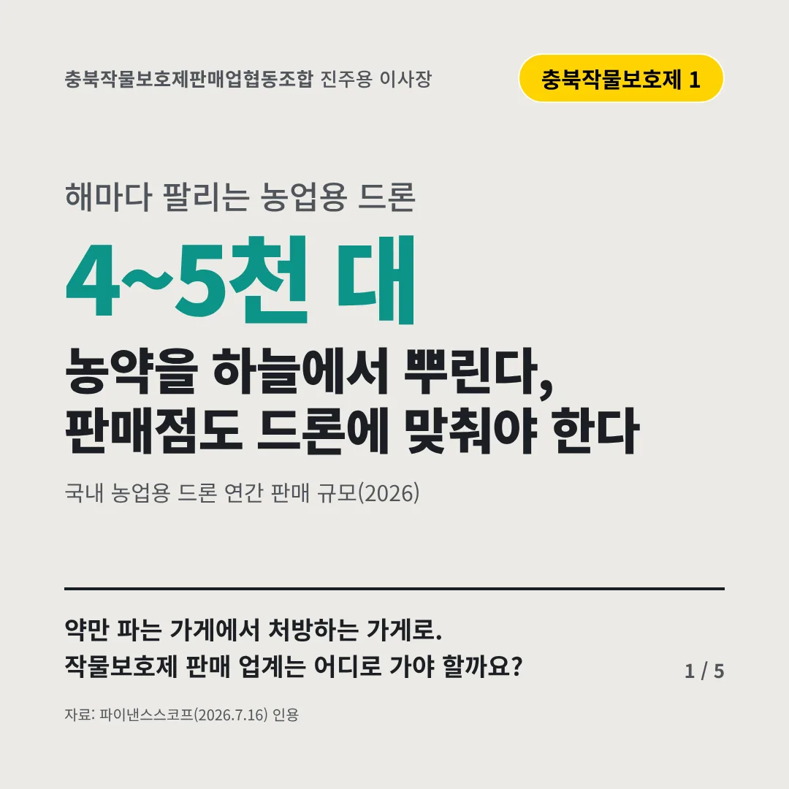
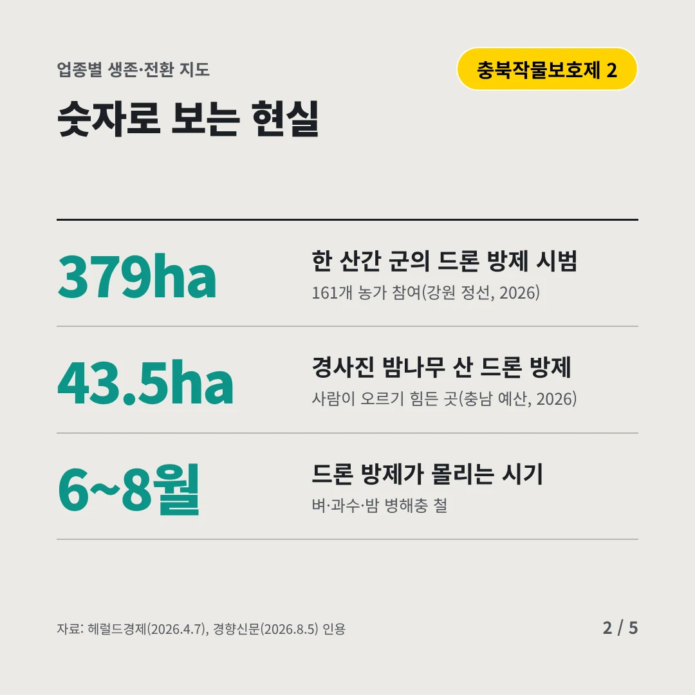
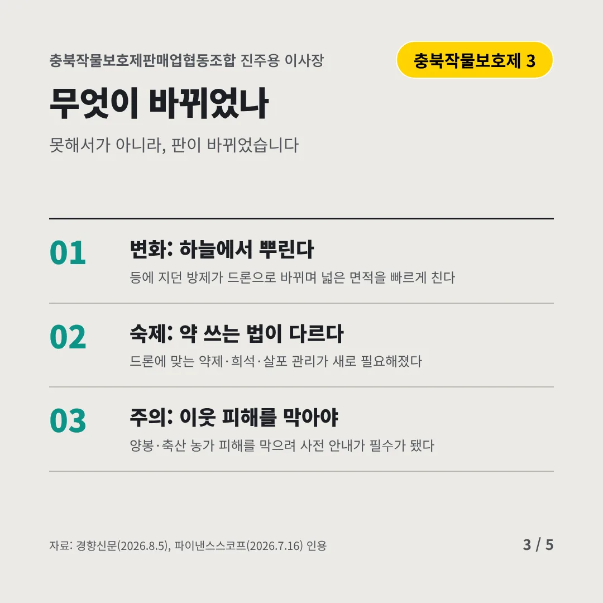
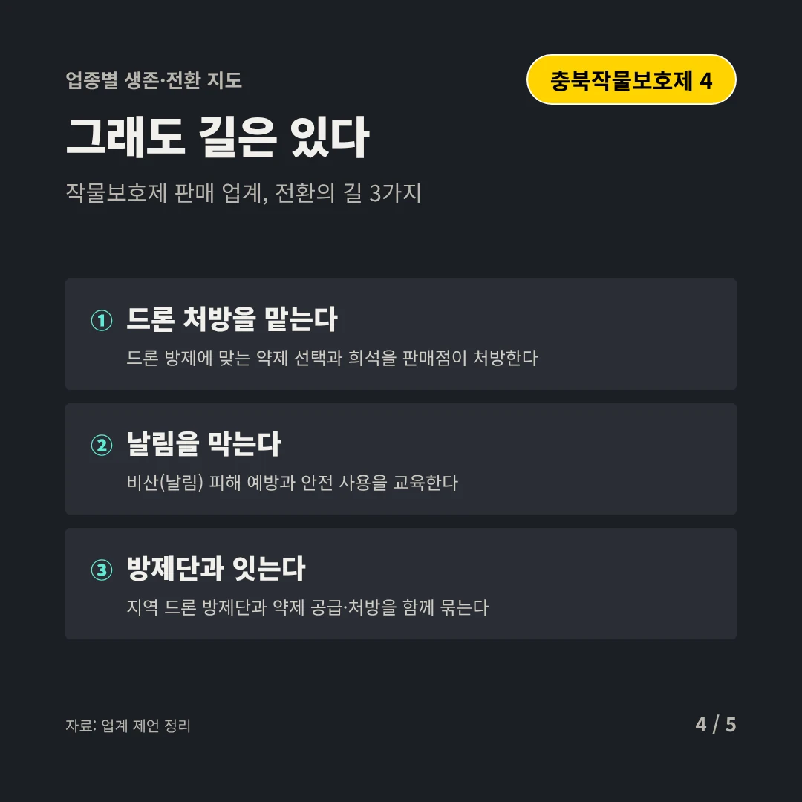
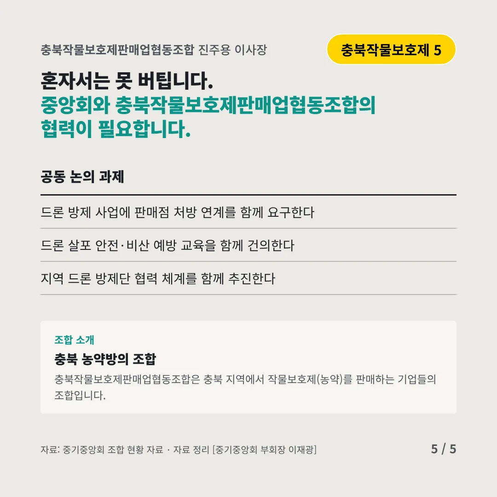
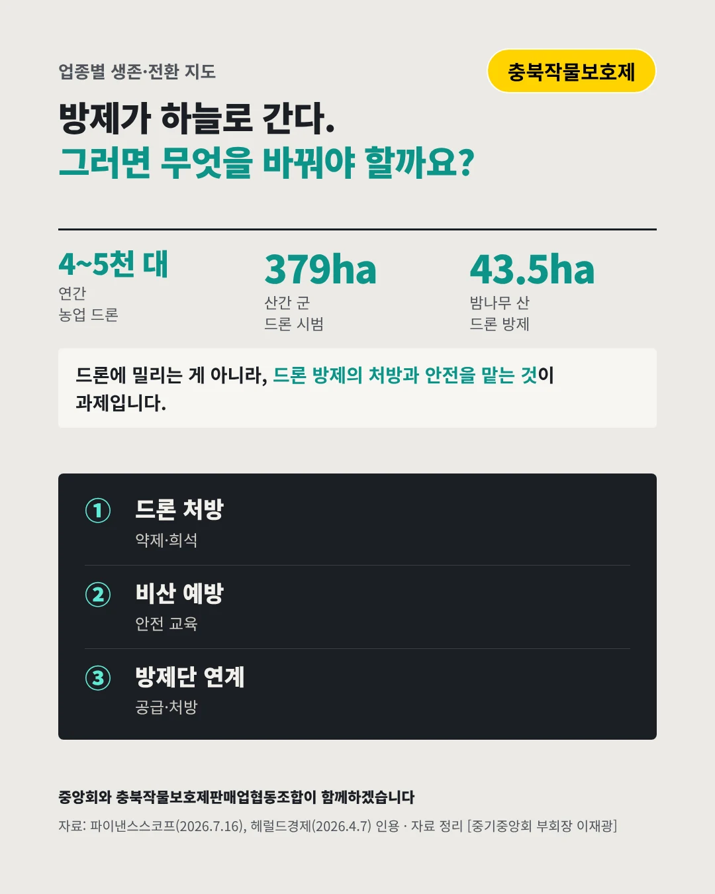

충북작물보호제판매업협동조합진주용 이사장
농약을 하늘에서 뿌린다, 판매점도 드론에 맞춰야 한다
4~5천 대 해마다 팔리는 농업용 드론






약만 파는 가게에서 처방하는 가게로. 작물보호제 판매 업계는 어디로 가야 할까요?
숫자로 보는 현실
- 379ha한 산간 군의 드론 방제 시범161개 농가 참여(강원 정선, 2026)
- 43.5ha경사진 밤나무 산 드론 방제사람이 오르기 힘든 곳(충남 예산, 2026)
- 6~8월드론 방제가 몰리는 시기벼·과수·밤 병해충 철
무엇이 바뀌었나
- 변화: 하늘에서 뿌린다등에 지던 방제가 드론으로 바뀌며 넓은 면적을 빠르게 친다
- 숙제: 약 쓰는 법이 다르다드론에 맞는 약제·희석·살포 관리가 새로 필요해졌다
- 주의: 이웃 피해를 막아야양봉·축산 농가 피해를 막으려 사전 안내가 필수가 됐다
그래도 길은 있다
- 드론 처방을 맡는다드론 방제에 맞는 약제 선택과 희석을 판매점이 처방한다
- 날림을 막는다비산(날림) 피해 예방과 안전 사용을 교육한다
- 방제단과 잇는다지역 드론 방제단과 약제 공급·처방을 함께 묶는다
한 장 요약

조합 소개
충북작물보호제판매업협동조합은 충북 지역에서 작물보호제(농약)를 판매하는 기업들의 조합입니다.
자료: 파이낸스스코프(2026.7.16), 헤럴드경제(2026.4.7), 경향신문(2026.8.5)